9. Rotational Motion#
Sep 25, 2026 | 10146 words | 68 min read
Chapter roadmap
This chapter extends the ideas of motion, force, energy, and momentum to rotating objects. The same physical principles still apply, but the distribution of mass and the choice of rotation axis now matter.
As you read, focus on three questions:
How do angular position, angular velocity, and angular acceleration connect to their translational counterparts?
How do torque and moment of inertia determine changes in rotational motion?
When can energy or angular momentum simplify a rotational problem?
These connections will let you analyze rolling objects, spinning systems, and collisions that produce rotation.
9.1. Angular Acceleration#
Circular Motion and Gravitation focused only on uniform circular motion, where the motion is described by moving at a constant speed or constant angular velocity. The angular velocity \(\omega\) is defined as the time rate of change of \(\theta\) or
where \(\theta\) is the angle of rotation relative to a reference direction. There is a relationship between the angular velocity \(\omega\) and the linear velocity, which is
where \(r\) is the radius of curvature. Recall that the counterclockwise direction is considered as the positive direction and clockwise is the negative direction.
Angular velocity is not constant when an ice skater pulls in her arms or when a child starts up a merry-go-round from rest. In these cases there is an angular acceleration, where \(\omega\) changes over a time interval \(\Delta t\). The faster the change occurs, the greater the angular acceleration.
Angular acceleration is the rate of change of angular velocity, which is written as
where \(\Delta \omega\) is the change in angular velocity. The units of angular acceleration are in \(\rm rad/s/s\) or \(\rm rad/s^2\). Similar to linear acceleration, the sign of angular acceleration comes from the sign of \(\Delta \omega\). If \(\omega\) increases (\(\Delta \omega > 0\)), then \(\alpha\) is positive.
9.1.1. Example Problem: Angular Acceleration of a Bike Wheel#
Example Problem: Angular Acceleration and Deceleration of a Bike Wheel
The Problem
A teenager spins a bicycle’s rear wheel from rest to \(2.5\times10^2\ {\rm rpm}\) in \(5.0\ {\rm s}\). (a) Calculate its angular acceleration in \({\rm rad/s^2}\). (b) She then applies the brakes, producing an angular acceleration of \(-87\ {\rm rad/s^2}\). How long does the wheel take to stop?
Show worked solution
The Model
Treat the wheel as a rigid body rotating about its axle, and take its initial direction of rotation as positive. The change in angular velocity over the spin-up time gives its average angular acceleration. For braking, use the given constant negative acceleration and set the final angular velocity to zero.
The Math
The measured inputs limit the answers to two significant figures. We display intermediate values with one guard digit (three significant figures) and retain full calculator precision for subsequent calculations. Final answers use two significant figures; exact conversion factors do not limit precision.
(a) The angular velocity must be expressed in radians per second before we calculate acceleration in the requested units. One revolution is \(2\pi\) radians, and one minute is 60 seconds.
The wheel starts from rest, so its change in angular velocity equals this final value. Dividing that change by the elapsed time gives the average angular acceleration.
(b) The spin-up final velocity becomes the initial velocity for braking. Solving the constant-acceleration relation for time gives a positive stopping time because both the velocity change and acceleration are negative.
The Conclusion
The average spin-up acceleration is \(5.2\ {\rm rad/s^2}\), and the wheel stops in \(0.30\ {\rm s}\). The braking acceleration has a much larger magnitude than the spin-up acceleration, so removing the same angular velocity takes much less time. Its negative sign indicates slowing, not a negative elapsed time.
Adapted from OpenStax, College Physics 2e, Example 10.1.
It would be useful to know how linear and angular acceleration are related. In circular motion, linear acceleration is tangent to the circle at the point of interest. Thus linear acceleration is also called the tangential acceleration \(a_{\rm t}\). Linear or tangential acceleration refers to changes in the magnitude of velocity but not its direction. An object undergoing circular motion experiences centripetal acceleration \(a_c\), which is due to the changing direction of the velocity but not its magnitude.
Tangential acceleration \(a_{\rm t}\) and centripetal acceleration \(a_c\) are perpendicular and independent of one another.
Because linear acceleration is proportional to a change in the magnitude of the velocity, it is defined as
where we can substitute \(v=r\omega\) for circular motion to get
By definition, we have \(\alpha = \frac{\Delta \omega}{\Delta t}\). Then we find that
This shows that linear and angular acceleration are directly proportional.
The greater the angular acceleration, the larger the linear (tangential) acceleration.
For example, the greater the angular acceleration of a car’s drive wheels, the greater the acceleration of the car. The radius also matters, where a small wheel has a smaller linear acceleration for a given angular acceleration \(\alpha\).
9.1.2. Example Problem: Angular Acceleration of a Motorcycle Wheel#
Example Problem: Angular Acceleration of a Motorcycle Wheel
The Problem
A motorcycle accelerates from rest to \(30\ {\rm m/s}\) (measured to the nearest \(1\ {\rm m/s}\)) in \(4.2\ {\rm s}\). What is the angular acceleration of its \(0.32\ {\rm m}\)-radius wheels if they roll without slipping?
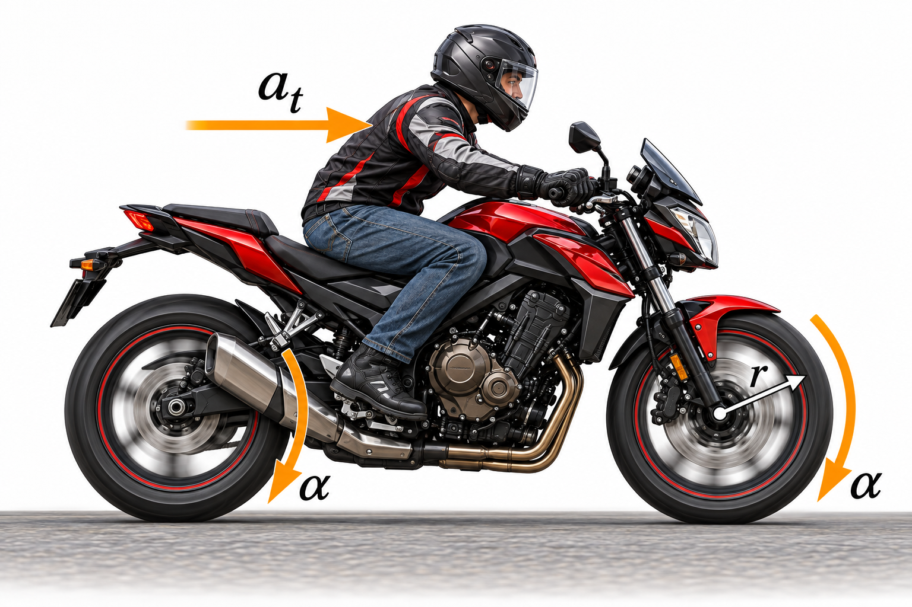
Fig. 9.1 Translational and rotational acceleration of a motorcycle. As the motorcycle accelerates forward, the centers of the wheels have tangential acceleration \(a_t\), while the wheels have angular acceleration \(\alpha\). For a wheel rolling without slipping, these quantities are related by \(a_t=r\alpha\), where \(r\) is the wheel radius. Adapted from OpenStax, College Physics 2e.#
Show worked solution
The Model
Model each wheel as a rigid body rolling without slipping. This condition links the motorcycle’s forward speed to the wheel’s angular speed through its radius. First find the motorcycle’s average linear acceleration, then use the rolling constraint to find the angular acceleration magnitude. Choose the positive rotational direction to match forward rolling.
The Math
The motorcycle starts from rest, so its average forward acceleration follows from its speed increase over the given time.
For a fixed wheel radius, the no-slip relation \(v=r\omega\) gives \(a=r\alpha\). The wheel’s angular acceleration is therefore the motorcycle’s linear acceleration divided by the radius.
The Conclusion
Each wheel has an average angular acceleration of \(22\ {\rm rad/s^2}\) in the direction of forward rolling. This result makes sense because a small wheel must change its rotation rate substantially to produce the motorcycle’s speed increase. A larger wheel would need less angular acceleration for the same forward acceleration.
Adapted from OpenStax, College Physics 2e, Example 10.2.
In kinematics, we identified physical variables that played a certain role (e.g., \(x\), \(v\), and \(a\)). Here we have identified the analogous quantities for rotational motion.
Rotational |
Translational |
Relationship |
|---|---|---|
\(\theta\) |
\(x\) |
\(\theta = \dfrac{x}{r}\) |
\(\omega\) |
\(v\) |
\(\omega = \dfrac{v}{r}\) |
\(\alpha\) |
\(a\) |
\(\alpha = \dfrac{a_{\rm t}}{r}\) |
Check Your Understanding
The Problem
Angular acceleration is a vector with both magnitude and direction. How do we denote its magnitude and direction? Illustrate with an example.
Show worked solution
The Conclusion
The magnitude is denoted by \(\alpha\) and is commonly measured in \({\rm rad/s^2}\). For rotation about a fixed axis, a plus or minus sign records the direction relative to the chosen positive rotation; in three dimensions, the right-hand rule gives the direction of \(\vec{\alpha}\) along the rotation axis. For example, if counterclockwise rotation is positive, a wheel that spins faster counterclockwise has positive angular acceleration.
Adapted from OpenStax, College Physics 2e, Check Your Understanding.
9.2. Kinematics of Rotational Motion#
Kinematics is the description of motion, where kinematics of rotational motion is more specific. It describes the relationships between the rotation angle, angular velocity, angular acceleration, and time. Similar to how we determined equations relating the physical variables in 1d (see Kinematics), we can find an equation relating \(\omega\), \(\alpha\), and time \(t\).
To simplify, we use \(a=a_t\) where the symbol \(a\) describes the tangential or linear acceleration. As in linear kinematics, we assume \(a\) is constant, which means that angular acceleration \(\alpha\) is also a constant. We now know that \(v=r\omega\) and \(a = r\alpha\) so we can substitute into our linear equation for velocity, or
The \(r\) cancels as a common factor in the above equation, which then yields
where \(\omega_0\) is the initial angular velocity. This equation describes the relationship (without reference to forces or masses) that may affect rotation. It is analogous in form to our linear equation for velocity.
Starting with the kinematic equations, we can derive the rotational kinematic equations.
Rotational |
Translational |
|
|---|---|---|
\(\theta=\overline{\omega}t\) |
\(x=\overline{v}t\) |
|
\(\omega=\omega_0+\alpha t\) |
\(v=v_0+at\) |
(constant \(\alpha\), \(a\)) |
\(\theta=\omega_0t+\dfrac{1}{2}\alpha t^2\) |
\(x=v_0t+\dfrac{1}{2}at^2\) |
(constant \(\alpha\), \(a\)) |
\(\omega^2=\omega_0^2+2\alpha\theta\) |
\(v^2=v_0^2+2ax\) |
(constant \(\alpha\), \(a\)) |
\(\bar{\omega} = \frac{\omega+\omega_0}{2}\) |
\(\bar{v} = \frac{v + v_0}{2}\) |
Problem-Solving Strategy for Rotational Kinematics
When solving a rotational kinematics problem, use the same general approach that you used for translational motion.
Identify the type of motion. Decide whether the object is rotating and whether the problem can be solved using rotational kinematics. If forces or torques are needed to describe the motion, you will need methods from later sections.
Identify what you need to find. Determine the unknown quantity, such as angular displacement \(\theta\), angular velocity \(\omega\), angular acceleration \(\alpha\), or time \(t\). A quick sketch can help you understand the motion.
Write down what you know. Identify the quantities given in the problem and any information you can infer. For example, “starts from rest” means \(\omega_0=0\).
Choose the appropriate equation. Select a rotational kinematics equation that connects the known quantities to the unknown. It can help to compare the problem with the corresponding translational kinematics equation.
Solve and substitute the values. Rearrange the equation for the unknown when needed, then substitute the known values with their units. Use radians for angular quantities when performing calculations.
Check the result. Make sure the units are correct and ask whether the magnitude and direction of your answer make physical sense.
9.2.1. Example Problem: Acceleration of a Fishing Reel#
Example Problem: Acceleration of a Fishing Reel
The Problem
A fishing reel starts from rest and unwinds line at a radius of \(4.5\ {\rm cm}\). Its angular acceleration is \(1.1\times10^2\ {\rm rad/s^2}\) for \(2.0\ {\rm s}\). Find (a) its final angular velocity, (b) the line’s final speed, (c) the number of revolutions, and (d) the length of line released.
Fig. 9.2 The reel’s rotation produces the linear motion of the fishing line at radius \(r\). Source: OpenStax, College Physics 2e, Figure 10.7.#
Show worked solution
The Model
Treat the reel as rotating with constant angular acceleration, and take the unwinding direction as positive. Assume the line does not slip and the unwinding radius remains constant. Rotational kinematics will give the reel’s angular velocity and displacement; the radius then converts these quantities into the line’s speed and released length.
The Math
(a) The reel starts from rest, and the acceleration and elapsed time are known. The constant-acceleration velocity relation gives its final angular velocity.
(b) The line moves at the tangential speed of the reel’s rim because it does not slip. The radius is \(0.045\ {\rm m}\) in SI units.
(c) The angular displacement depends on the average angular velocity during the acceleration, not just the final velocity. The displacement relation accounts for the increase from rest.
Dividing by the angle in one revolution converts the angular displacement into the number of turns.
(d) Each turn releases one circumference of line. The arc-length relation expresses the same connection for an angle measured in radians.
The Conclusion
The reel reaches \(2.2\times10^2\ {\rm rad/s}\) and the line reaches \(9.9\ {\rm m/s}\). During \(35\) revolutions, it releases \(9.9\ {\rm m}\) of line. Because the line accelerates uniformly from rest, its average speed is half its final speed; over two seconds, that agrees with the released length.
Adapted from OpenStax, College Physics 2e, Example 10.3.
9.2.2. Example Problem: Stopping a Fishing Reel#
Example Problem: Stopping a Fishing Reel
The Problem
The fishing reel from the preceding example rotates initially at \(2.2\times10^2\ {\rm rad/s}\). A brake produces a constant angular acceleration of \(-3.0\times10^2\ {\rm rad/s^2}\). How long does the reel take to stop?
Show worked solution
The Model
Take the reel’s initial rotation as positive. The brake supplies a constant acceleration opposite that rotation, so angular velocity decreases linearly with time. Use the angular-velocity relation with a final velocity of zero to find when the reel first stops.
The Math
The constant-acceleration relation connects the known initial velocity and braking acceleration to the unknown stopping time.
Solving for time and setting the final angular velocity to zero gives the stopping time. The negative velocity change and negative acceleration cancel.
The Conclusion
The reel stops after \(0.73\ {\rm s}\). This is reasonable because the brake removes \(3.0\times10^2\ {\rm rad/s}\) of angular velocity each second, while the reel initially has only \(2.2\times10^2\ {\rm rad/s}\). It must therefore stop in less than one second; the result does not describe any later reverse rotation.
Adapted from OpenStax, College Physics 2e, Example 10.4.
9.2.3. Example Problem: Slow Acceleration of a Freight Train#
Example Problem: Slow Acceleration of a Freight Train
The Problem
A freight train starts from rest. Its \(0.35\ {\rm m}\)-radius wheels have an angular acceleration of \(0.25\ {\rm rad/s^2}\) and roll without slipping. After the wheels complete exactly \(200\) revolutions, find (a) the distance traveled and (b) the final angular velocity of the wheels and linear velocity of the train.
Show worked solution
The Model
Assume constant angular acceleration and rolling without slipping. Choose forward travel and the corresponding wheel rotation as positive. The wheel’s angular displacement determines the train’s distance through the rolling constraint. Since time is not given, use the kinematic relation connecting angular velocity directly to angular displacement.
The Math
(a) The rolling and kinematic relations require the angle in radians. Converting the given revolutions provides that angle.
Without slipping, each revolution advances the train by one wheel circumference. The equivalent arc-length relation gives the total distance.
(b) The train starts from rest, so the initial angular velocity is zero. The time-independent kinematic relation determines the final angular velocity, with the positive root matching our chosen direction.
The no-slip constraint converts angular velocity into the train’s forward velocity. The displayed angular velocity includes one guard digit for this step.
The Conclusion
The train travels \(4.4\times10^2\ {\rm m}\) and reaches \(8.8\ {\rm m/s}\), while its wheels reach \(25\ {\rm rad/s}\). The modest final speed after hundreds of meters is consistent with the small angular acceleration. The distance also corresponds to 200 wheel circumferences, as rolling without slipping requires.
Adapted from OpenStax, College Physics 2e, Example 10.5.
9.2.4. Example Problem: Distance Traveled on a Microwave Plate#
Example Problem: Distance Traveled by a Fly on a Microwave Plate
The Problem
A fly remains on the outer edge of a microwave plate of radius \(0.15\ {\rm m}\). The plate rotates at \(6.0\ {\rm rpm}\) for \(2.0\ {\rm min}\). Ignoring start-up and slow-down, what total distance does the fly travel?
Fig. 9.3 The fly follows a circular path at the outer radius of the rotating plate. Source: OpenStax, College Physics 2e, Figure 10.8.#
Show worked solution
The Model
Treat the fly as remaining at a fixed radius on a plate rotating at constant speed. Find how many revolutions occur during the heating time, then multiply by the distance around one circular path. The requested quantity is total distance traveled, not displacement from the starting point.
The Math
The rotation rate and time are both given in minutes, so their units are already compatible. Their product gives the number of completed revolutions.
Each revolution carries the fly through a distance equal to the circumference of its circular path. Multiplying by the number of turns gives the total distance.
The Conclusion
The fly travels about \(11\ {\rm m}\) despite remaining inside the microwave. This is reasonable because it repeats a path almost a meter long twelve times. Returning to its starting point after complete revolutions can give zero displacement without making the distance traveled zero.
Adapted from OpenStax, College Physics 2e, Example 10.6.
Check Your Understanding
The Problem
Rotational kinematics has many useful relationships, often written as equations. Are these relationships laws of physics, or are they descriptive?
Show worked solution
The Conclusion
Rotational kinematics is descriptive. Its equations relate angular position, angular velocity, angular acceleration, and time, but they do not explain what causes the motion. Dynamics supplies the causal laws by connecting torque and moment of inertia to angular acceleration.
Adapted from OpenStax, College Physics 2e, Check Your Understanding.
9.3. Dynamics of Rotational Motion: Rotational Inertia#
From experience, you know that a force is needed to change angular velocity (i.e., change the spin of an object). For example, a door opens slowly if we push too close to its hinges or if the door is more massive.
In the first case, a force applied too close to the pivot produces a small angular acceleration. In the other case it seems like the mass is related to its inertia and is correlated to how it should accelerate. The angular acceleration is inversely proportional to its mass. These relationships appear similar to those among force, mass, and acceleration embodied in Newton’s second law of motion. In fact, they are the precise analogs to both force and mass.
Consider what happens if we exert a force \(\vec{F}\) on a point mass \(m\) that is located by \(\vec{r}\) from a pivot point. Because the force is perpendicular to \(\vec{r}\), an acceleration of \(\vec{a} = \vec{F}/m\) is found in the direction of \(\vec{F}\).
We can use the alternative scalar form, \(F = ma\) and relate it to expressions for rotational quantities. Recall that \(a = r\alpha\), which we can substitute to get
Recall that torque is the turning effectiveness of a force. In this case, torque is \(\tau = Fr_\perp\), where the force \(F\) is already perpendicular to \(r\) so we can drop the \(\perp\) subscript. To turn the above equation into a torque, we multiply both sides by \(r\) to get
This is the rotational analog of Newton’s second law (\(F=ma\)). The torque plays the role of force, where the angular acceleration \(\alpha\) plays the role of \(a\), and the remainder \(mr^2\) is analogous to a non-rotating mass (or to inertia). As a result, we call the quantity \(mr^2\) rotational inertia or the moment of inertia of a point mass \(m\) a distance \(r\) from the center of rotation.
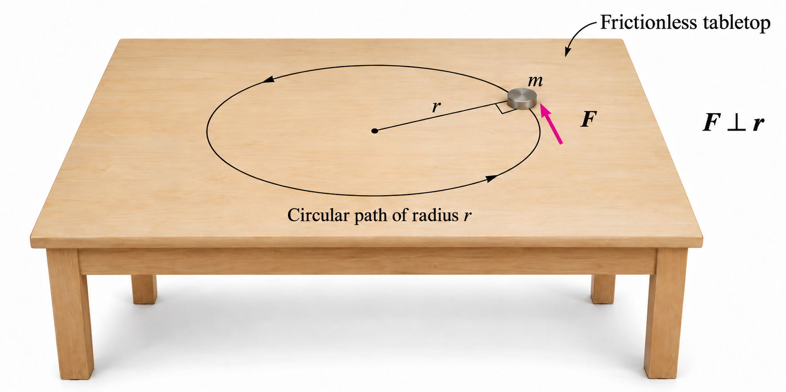
Fig. 9.4 Tangential force and angular acceleration. A puck of mass \(m\) moves along a circular path of radius \(r\) on a frictionless table. The cord supplies the inward centripetal force, while the applied tangential force \(F\) changes the puck’s speed. Because \(F\) is perpendicular to the radius, its torque about the pivot has magnitude \(\tau=rF\) and produces an angular acceleration according to \(\tau=I\alpha\), where \(I=mr^2\) for a point mass. Adapted from: OpenStax, College Physics 2e, Figure 10.10, Section 10.3.#
9.3.1. Rotational Inertia and Moment of Inertia#
To expand our concept of rotational inertia, we define the moment of inertia \(I\) of an object to be the sum of \(mr^2\) for all the point masses of which it is composed. In mathematical form, this is
The moment of inertia \(I\) is analogous to the mass \(m\) in translational motion. It also depends on the chosen axis of rotation through the distance \(r_j\). We limit this discussion to calculating the moment of inertia for a simple example that is a hoop, which has all its mass at the same distance from the rotational axis (i.e., cylindrical symmetry).
A hoop’s moment of inertia around its axis is therefore \(MR^2\), where \(M\) represents the total mass and \(R\) is the radius of the hoop. Note that \(I\) has units of mass multiplied by distance squared (\(\rm kg \cdot m^2\)).
Note
We use \(M\) and \(R\) for an entire object to distinguish them from \(m\) and \(r\) for point masses.
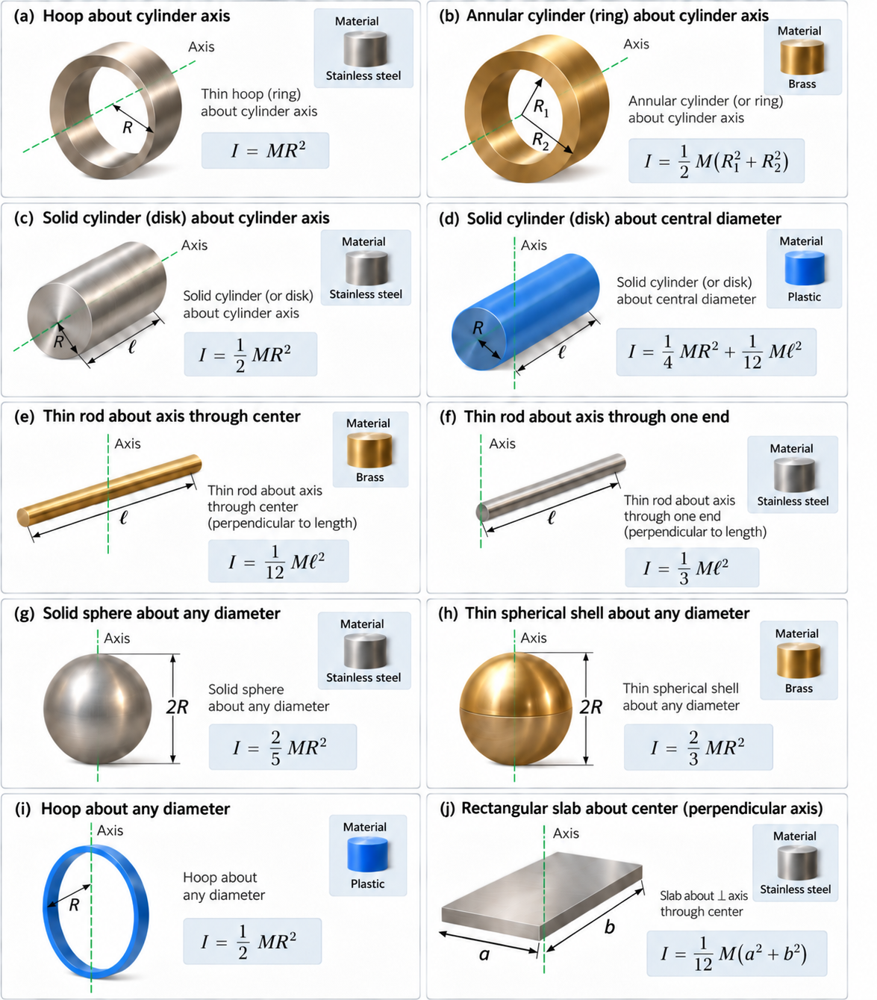
Fig. 9.5 Moments of inertia for common rigid bodies. The moment of inertia depends on how an object’s mass is distributed relative to the chosen rotation axis. The same object can therefore have different moments of inertia when it rotates about different axes. Here \(M\) is the object’s mass, \(R\) is a radius, \(\ell\) is a length, and \(a\) and \(b\) are side lengths. Adapted from OpenStax, College Physics 2e.#
The general relationship among the net torque \(\tau_{\rm net}\), moment of inertia \(I\), and the angular acceleration \(\alpha\) is
where \(\tau_{\rm net} = {\displaystyle \sum_j \tau_j}\), or the sum of the torques relative to a chosen axis of rotation. For simplicity, we only consider torques exerted by forces in the plane of the rotation. Such torques are either positive or negative and add like ordinary numbers.
As we might expect, the larger the torque is, the larger the angular acceleration. For example,
the harder a child pushes a merry-go-round, the faster it accelerates.
the more massive a merry-go-round, the slower it accelerates for the same torque.
The basic relationship between moment of inertia and angular acceleration is that the larger the moment of inertia, the smaller the angular acceleration.
Note
The moment of inertia depends not only on the mass of an object, but also how the mass is distributed relative to the axis of rotation.
It is easier to accelerate a merry-go-round (with children) if they all stand near the center (axis of rotation) rather than if they all stand at the outer edge. The mass is the same in both cases, but the moment of inertia is much larger when the children are at the edge.
Problem-Solving Strategy for Rotational Dynamics
When forces cause an object to rotate, use the rotational form of Newton’s second law.
Identify the rotating system. Decide what object or group of objects you are analyzing and identify the point or axis about which it rotates.
Draw the situation. Make a clear sketch showing the object, the rotation axis, and any important distances.
Draw a free-body diagram. Show and label all external forces acting on the system. Pay attention to where each force acts relative to the rotation axis.
Calculate the net torque. Determine the torque produced by each force and add the torques using a consistent sign convention for clockwise and counterclockwise rotation.
Apply Newton’s second law for rotation. Use \(\tau_{\rm net}=I\alpha,\) where \(I\) is the moment of inertia about the chosen rotation axis and \(\alpha\) is the angular acceleration. Make sure you use the correct moment of inertia for both the object’s shape and the location of the rotation axis.
Check the result. Make sure the units are correct and ask whether the direction and size of the angular acceleration make physical sense.
9.3.2. Example Problem: Mass Distribution on a Merry-Go-Round#
Example Problem: Effect of Mass Distribution on a Merry-Go-Round
The Problem
A father exerts a tangential force of \(2.5\times10^2\ {\rm N}\) at the edge of a \(5.0\times10^1\ {\rm kg}\) uniform-disk merry-go-round of radius \(1.5\ {\rm m}\). Find the angular acceleration (a) when it is empty and (b) when an \(18\ {\rm kg}\) child sits \(1.25\ {\rm m}\) from the center. Neglect friction.
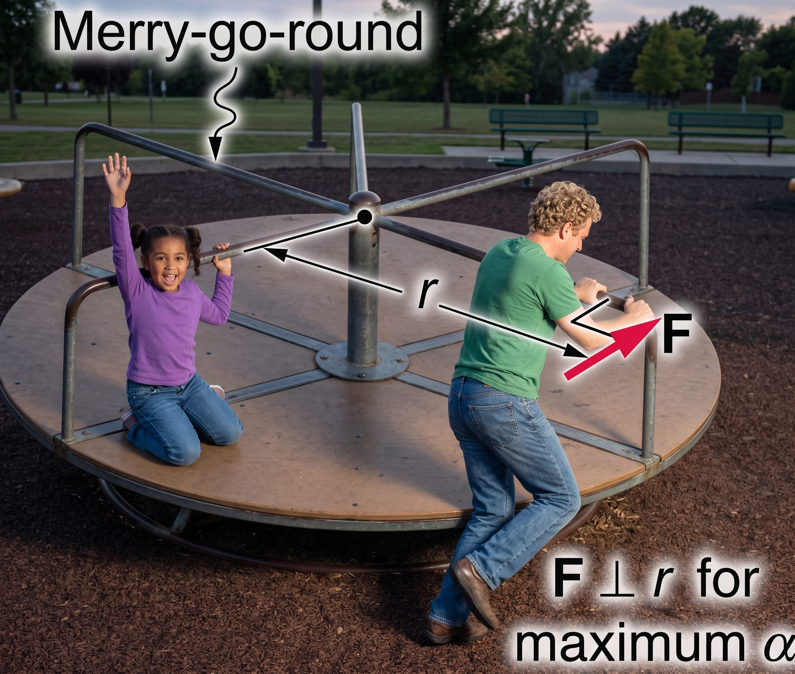
Fig. 9.6 Applying torque to a merry-go-round. The man pushes tangentially at the rim, perpendicular to the radius \(r\), producing a torque of magnitude \(\tau=rF\) about the central axis. The seated child increases the system’s moment of inertia, so the same applied torque produces a smaller angular acceleration. Adapted from: OpenStax, College Physics 2e, Figure 10.12.#
Show worked solution
The Model
Take moments about the merry-go-round’s central vertical axis, with positive rotation in the direction of the father’s push. Model the platform as a uniform disk and the child as a point mass at the stated radius. With friction neglected, the applied torque is the net torque in both cases; only the total moment of inertia changes.
The Math
The push is tangential, so the force is perpendicular to the radius and its full magnitude produces torque.
(a) The empty platform’s resistance to angular acceleration is determined by the moment of inertia of a uniform disk.
Newton’s rotational second law gives the acceleration from the net torque divided by that moment of inertia.
(b) The child rotates with the platform, so the child’s point-mass moment of inertia must be added about the same axis.
The same applied torque now accelerates the larger total moment of inertia.
The Conclusion
The angular acceleration decreases from \(6.7\ {\rm rad/s^2}\) to \(4.4\ {\rm rad/s^2}\) when the child sits on the platform. The child increases the moment of inertia by one-half, so the unchanged torque produces two-thirds of the original acceleration. This agrees with the expected greater resistance to changes in rotation.
Adapted from OpenStax, College Physics 2e, Example 10.7.
Check Your Understanding
The Problem
Torque is analogous to force, and moment of inertia is analogous to mass. Are torque and moment of inertia as simple as their translational analogs?
Show worked solution
The Conclusion
No. A torque depends on the force magnitude, its direction, and its point of application relative to the chosen axis. A moment of inertia depends on both the amount of mass and how that mass is distributed relative to the axis. The rotational analogies are precise, but the rotational quantities depend on additional geometric information.
Adapted from OpenStax, College Physics 2e, Check Your Understanding.
9.4. Rotational Kinetic Energy#
Work and energy are associated with rotational motion. Work must be done to rotate objects (e.g., grindstones or merry-go-rounds). Work was defined in Work and Energy for translational motion, where we can build on that knowledge when considering work done in rotational motion.
The simplest situation is one in which the net force is exerted perpendicular to the radius of a disk and remains perpendicular as the disk begins to rotate. The force is parallel to the displacement, and so the net work done is the product of the force times the arclength traveled or
To get torque and other rotational quantities into equations we multiply and divide the right-hand side of the equation by \(r\) to get
We recognize that \(\tau_{\rm net} = rF_{\rm net}\) and \(\Delta s/r = \theta\), so that
This expression for rotational work is very similar to the familiar definition \(W_{\rm net} = Fd\). Here, torque is analogous to force, while the angle is analogous to distance \(d\).
To get an expression for rotational kinetic energy, we start with \(\tau_{\rm net} = I\alpha\). Recall from Work and Energy, we used the net work done to define a change in kinetic energy. This means we need to find \(\alpha \theta\), which can come from one of the rotational kinematics equations. We start with
and solve for \(\alpha \theta\) to get
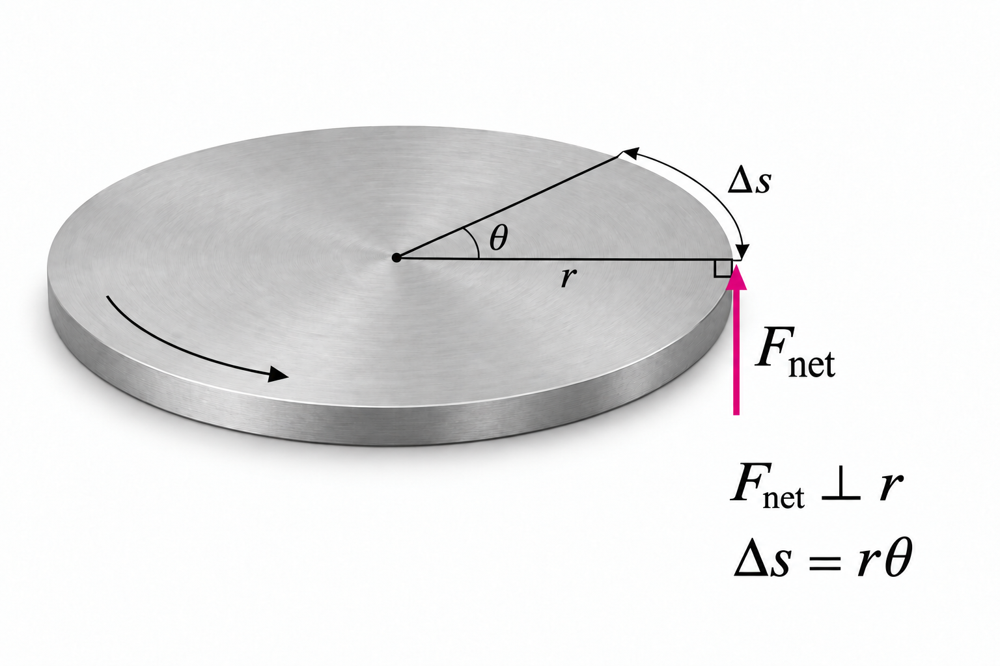
Fig. 9.7 Work done by a tangential force. The force \(F_{\rm net}\) acts perpendicular to the radius \(r\) and tangent to the rim. As the disk rotates through an angle \(\theta\), a point on its rim travels an arc length \(\Delta s=r\theta\), with \(\theta\) measured in radians. For a constant force magnitude that remains tangential, the work is \(W_{\rm net}=F_{\rm net}\Delta s=\tau_{\rm net}\theta\). Adapted from: OpenStax, College Physics 2e, Figure 10.14, Section 10.4.#
We substitute this back into our equation for the net work to get
This is the work-energy theorem for rotational motion. We can see that it is a change in the kinetic energy from the net work. Analogous to the kinetic energy with translational motion, we define the rotational kinetic energy \(\rm KE_{rot}\) for an object with a moment of inertia \(I\) and an angular velocity \(\omega\):
In this equation, the moment of inertia \(I\) plays the role of mass \(m\) (or inertia) and the angular velocity \(\omega\) plays the role of velocity \(v\).
9.4.1. Example Problem: Work and Energy of a Grindstone#
Example Problem: Work and Energy of a Grindstone
The Problem
A person applies a \(2.0\times10^2\ {\rm N}\) tangential force to the edge of a \(0.32\ {\rm m}\)-radius grindstone through \(1.0\ {\rm rad}\). The \(85\ {\rm kg}\) grindstone is a uniform disk that starts from rest. Neglect friction. Find (a) the work done, (b) the final angular velocity, and (c) the final rotational kinetic energy.
Fig. 9.8 A tangential force at the grindstone’s edge produces torque through the rotation angle. Source: OpenStax, College Physics 2e, Figure 10.16.#
Show worked solution
The Model
Model the grindstone as a uniform disk rotating about a fixed axle. The constant tangential force supplies a constant torque in the positive direction of rotation. With friction neglected, its work becomes rotational kinetic energy. Find the angular velocity independently from torque and rotational kinematics, then compare the kinetic energy with the work.
The Math
(a) The tangential force acts with a lever arm equal to the radius, so the torque is the product of radius and force.
A constant torque does work in proportion to the angular displacement measured in radians.
(b) The uniform-disk model determines the moment of inertia about the axle.
Dividing the torque by the moment of inertia gives the constant angular acceleration.
The grindstone starts from rest and rotates through a known angle. The kinematic relation without time therefore gives its final angular velocity.
(c) The final energy is entirely rotational because the axle remains fixed. Using the angular velocity with one displayed guard digit gives the rotational kinetic energy.
The Conclusion
The force does \(64\ {\rm J}\) of work, bringing the grindstone to \(5.4\ {\rm rad/s}\) with \(64\ {\rm J}\) of kinetic energy. The equality of work and energy gain is the expected consistency check: the stone starts from rest, and the model includes no friction or other energy transfer.
Adapted from OpenStax, College Physics 2e, Example 10.8.
Problem-Solving Strategy for Rotational Energy
When rotation is involved in a work or energy problem, use the same energy ideas that apply to translational motion.
Identify the system. Decide which object or group of objects you are analyzing. A quick sketch can help you identify the motion and the important energy changes.
Identify the types of energy involved. Determine whether the system has translational kinetic energy, rotational kinetic energy, gravitational potential energy, elastic potential energy, or some combination of these.
Decide whether energy is conserved. If no energy enters or leaves the system, mechanical energy is conserved: \(KE_i+PE_i=KE_f+PE_f.\) Remember that the kinetic energy may include both translational and rotational motion.
Include any energy transferred into or out of the system. If external work, friction, heating, or another energy transfer occurs, include it in the energy equation rather than assuming mechanical energy is conserved.
Simplify before calculating. Remove any terms that are zero or unchanged between the initial and final states. This often makes the calculation much easier.
Solve for the unknown. Rearrange the energy equation as needed, then substitute the known values with their units.
Check the result. Make sure the units are correct and ask whether the size of the answer makes physical sense.
9.4.2. Example Problem: Energy in Helicopter Blades#
Example Problem: Energy in Helicopter Blades
The Problem
A \(1.0\times10^3\ {\rm kg}\) rescue helicopter has four blades, each \(4.0\ {\rm m}\) long and \(5.0\times10^1\ {\rm kg}\). Model each blade as a thin rod rotating about one end. Find (a) the blades’ rotational kinetic energy at \(3.0\times10^2\ {\rm rpm}\), (b) the helicopter’s translational kinetic energy at \(2.0\times10^1\ {\rm m/s}\) and its ratio to the blade energy, and (c) the height to which the blade energy could lift the helicopter.
Show worked solution
The Model
Treat the four blades as identical thin rods rotating about their inner ends. Add their moments of inertia to find their rotational energy; use the full helicopter mass for translational energy and gravitational potential energy. For the lifting estimate, assume all blade rotational energy could become gravitational potential energy, an ideal upper limit rather than a prediction of actual flight.
The Math
(a) Each blade contributes one-third of its mass times its squared length to the moment of inertia. All four rotate about the same axis, so their contributions add.
The energy formula requires angular velocity in radians per second. The unit conversion gives the appropriate value.
The blades’ rotational energy depends on their combined moment of inertia and the square of this angular velocity.
(b) Translation carries the entire helicopter forward, so the relevant mass is \(1.0\times10^3\ {\rm kg}\) rather than the blade mass alone.
The requested ratio compares this translational energy with the blade energy.
(c) Complete conversion of blade energy into gravitational potential energy would satisfy \(mgh=K_{\rm rot}\). Solving for height gives the ideal lifting estimate.
The Conclusion
The blades store \(5.3\times10^5\ {\rm J}\), while the helicopter’s translational energy is \(2.0\times10^5\ {\rm J}\), or \(38\%\) as much. The large blade energy is plausible because their mass extends far from the axis and rotates rapidly. Its ideal lifting equivalent is \(54\ {\rm m}\); losses and the need to maintain rotor motion prevent treating that height as an actual flight capability.
Adapted from OpenStax, College Physics 2e, Example 10.9.
9.4.3. Why Don’t all Objects Roll Downhill at the Same Rate?#
One of the quality controls in a tomato soup factory consists of rolling filled cans down a ramp. If they roll too fast, the soup is too thin. Why should cans of identical size and mass roll down an incline at different rates? Why should the thickest soup roll the slowest?
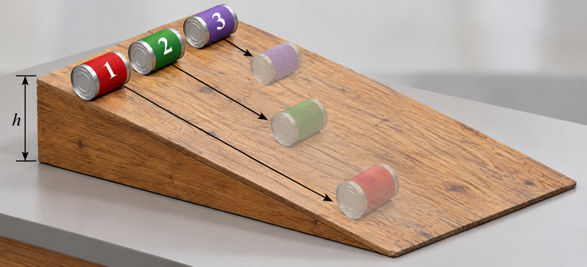
Fig. 9.9 Sliding and rolling cans on an incline. Three soup cans of equal mass start from rest at the same height \(h\). Can 1 has a low-friction coating and slides without rotating, reaching the bottom first because essentially all of its lost gravitational potential energy becomes translational kinetic energy. Cans 2 and 3 roll without slipping. Can 2 contains thin soup that remains largely nonrotating while the container turns, so it finishes second. Can 3 contains thick soup that rotates with the container, directing more energy into rotation and leaving less for translation, so it finishes last. The faint images indicate later positions of the same three cans. Adapted from: OpenStax, College Physics 2e, Figure 10.18.#
The easiest way to answer these questions is to consider energy. Suppose each can starts down the ramp from rest. Each can starting from rest means each starts with the same gravitational potential energy \(\rm PE_{grav}\), which is converted entirely to \(\rm KE\) (provided each rolls without slipping).
The kinetic energy \(\rm KE\) can take the form of \(\rm KE_{trans}\) or \(\rm KE_{rot}\), where the total \(\rm KE\) is the sum of the two. If a can rolls down a ramp, it puts part of its energy into rotation, leaving less for translation. Thus, the can goes slower than if it slid down. The thin soup does not rotate, whereas the thick soup does because it sticks to the can. The thick soup puts more of the can’s original \(\rm PE_{grav}\) into rotation than the thin soup, and the can rolls more slowly.
Assuming no losses due to friction, there is only one force doing work: gravity. The total work done is the change in kinetic energy. As the cans start moving, the potential energy is changing into kinetic energy. Conservation of energy requires the following:
We can substitute more specific expressions to get
The initial \(mgh\) is divided between translational kinetic energy and rotational kinetic energy. A greater value of \(I\) means that less energy goes into translation. If the can slides down without friction, then \(\omega=0\) and all the energy goes into translation. Thus the can goes faster.
9.4.4. Example Problem: Cylinder Rolling Down an Incline#
Example Problem: Speed of a Cylinder Rolling Down an Incline
The Problem
A solid cylinder starts from rest and rolls without slipping down an incline with a vertical height of \(2.0\ {\rm m}\). Its mass is \(0.75\ {\rm kg}\) and its radius is \(4.0\ {\rm cm}\). What is its speed at the bottom?
Show worked solution
The Model
Use conservation of mechanical energy for the cylinder–Earth system, with gravitational potential energy zero at the bottom. Model the cylinder as uniform and solid, and neglect rolling resistance. For ideal rolling without slipping on a stationary incline, static friction supplies the needed torque without dissipating energy. The lost gravitational potential energy becomes both translational and rotational kinetic energy.
The Math
The cylinder starts from rest, so all of its initial mechanical energy is gravitational potential energy. At the bottom, that energy is shared between motion of the center-of-mass and rotation about it.
The solid-cylinder relation \(I=\frac12mR^2\) and rolling constraint \(\omega=v/R\) express both kinetic-energy terms using the same unknown speed. Substitution shows that the radius cancels.
The mass also cancels because both the available potential energy and the required kinetic energy are proportional to it. Solving for the positive speed gives the result.
The Conclusion
The cylinder reaches \(5.1\ {\rm m/s}\) at the bottom. It moves more slowly than a nonrotating object sliding without friction through the same height because some energy goes into rotation. The independence from mass and radius is consistent with this ideal model: cylinders of the same shape divide their energy in the same proportion.
Adapted from OpenStax, College Physics 2e, Example 10.10.
Check Your Understanding
The Problem
Is rotational kinetic energy completely analogous to translational kinetic energy? What differences remain? Give an example of each type.
Show worked solution
The Conclusion
Yes. Both are scalar energies of organized motion. Translational kinetic energy depends on a system’s mass and linear speed, while rotational kinetic energy depends on its moment of inertia and angular speed. A rolling bicycle wheel has both forms: its center-of-mass motion contributes translational kinetic energy, and its spin contributes rotational kinetic energy.
Adapted from OpenStax, College Physics 2e, Check Your Understanding.
9.5. Angular Momentum and its Conservation#
Every rotational phenomenon has a direct translational analog. Thus, we can define the rotational analog of momentum (\(p = mv\)) as the angular momentum \(L\):
Units for angular momentum are \(\rm kg\cdot m^2/s\). An object that has a large moment of inertia \(I\) or angular velocity \(\omega\) has a very large angular momentum.
9.5.1. Example Problem: Angular Momentum of Earth#
Example Problem: Angular Momentum of Earth
The Problem
Estimate Earth’s angular momentum due to its daily rotation. Model Earth as a uniform solid sphere with mass \(6.0\times10^{24}\ {\rm kg}\), radius \(6.4\times10^6\ {\rm m}\), and rotation period of exactly \(24\ {\rm h}\).
Show worked solution
The Model
Estimate Earth’s spin angular momentum about its polar axis, not its orbital angular momentum around the Sun. Use the specified uniform-solid-sphere model to determine the moment of inertia, then combine it with the angular velocity obtained from one rotation per day. The result is a magnitude; its direction follows the right-hand rule for Earth’s rotation.
The Math
Earth turns through \(2\pi\) radians during one rotation period. Treating the stipulated 24-hour period as exact for this model and converting it to seconds gives the angular velocity in SI units.
A uniform solid sphere has moment of inertia \(I=\frac25MR^2\). Multiplying this by angular velocity gives the spin angular momentum.
The Conclusion
The uniform-sphere estimate is approximately \(7.1\times10^{33}\ {\rm kg\cdot m^2/s}\). This enormous angular momentum is reasonable despite Earth’s slow rotation rate because its moment of inertia includes both a very large mass and the square of a very large radius. Earth’s nonuniform internal density makes this a model-based estimate, not an exact value.
Adapted from OpenStax, College Physics 2e, Example 10.11.
When you push a merry-go-round, spin a bike wheel, or open a door, you exert a torque. If the torque you exert is greater than opposing torques, then the rotation accelerates and the angular momentum increases. The greater the net torque, the more rapid the increase in \(L\). The relationship between torque and angular momentum is
This expression is analogous to the relationship between force and linear momentum, \(F = \Delta p/\Delta t\). The equation is the rotational form of Newton’s second law.
9.5.2. Example Problem: Angular Momentum of a Lazy Susan#
Example Problem: Angular Momentum of a Lazy Susan
The Problem
A person applies a \(2.5\ {\rm N}\) tangential force to the edge of a lazy Susan of radius \(0.26\ {\rm m}\) for \(0.15\ {\rm s}\). It starts from rest, has mass \(4.0\ {\rm kg}\), and is modeled as a uniform disk. Neglect friction. Find (a) its final angular momentum and (b) its final angular velocity.
Fig. 9.10 The force is perpendicular to the tray’s radius, so it produces the torque used in the angular-impulse calculation. Source: OpenStax, College Physics 2e, Figure 10.19.#
Show worked solution
The Model
Model the lazy Susan as a uniform disk rotating about its central axle, initially at rest. Take the direction of the applied torque as positive and neglect friction. First use angular impulse to find the angular momentum gained during the push. Then use the disk’s moment of inertia to convert angular momentum into angular velocity.
The Math
(a) The force is tangential, so its perpendicular lever arm equals the disk radius.
The constant torque acts for the given time, producing an angular impulse equal to the change in angular momentum. Since the disk starts from rest, this change is also its final angular momentum.
(b) Angular momentum alone does not specify angular velocity; the mass distribution also matters. The uniform-disk model supplies the required moment of inertia.
Solving \(L=I\omega\) for angular velocity gives the rotation rate after the push. The displayed angular momentum retains one guard digit in this calculation.
The Conclusion
The lazy Susan gains \(0.098\ {\rm kg\cdot m^2/s}\) of angular momentum and reaches \(0.72\ {\rm rad/s}\) in the direction of the push. A short, gentle push producing a modest rotation rate is physically plausible. For the same angular impulse, a larger moment of inertia would produce a smaller angular velocity.
Adapted from OpenStax, College Physics 2e, Example 10.12.
9.5.3. Example Problem: Torque in a Kick#
Example Problem: Torque in a Kick
The Problem
An upper-leg muscle exerts a \(2.0\times10^3\ {\rm N}\) force with an effective perpendicular lever arm of \(2.2\ {\rm cm}\). The lower leg has a moment of inertia of \(1.3\ {\rm kg\cdot m^2}\). (a) Find its angular acceleration. (b) Starting from rest and neglecting gravity, find its rotational kinetic energy after it rotates through \(1.0\ {\rm rad}\).
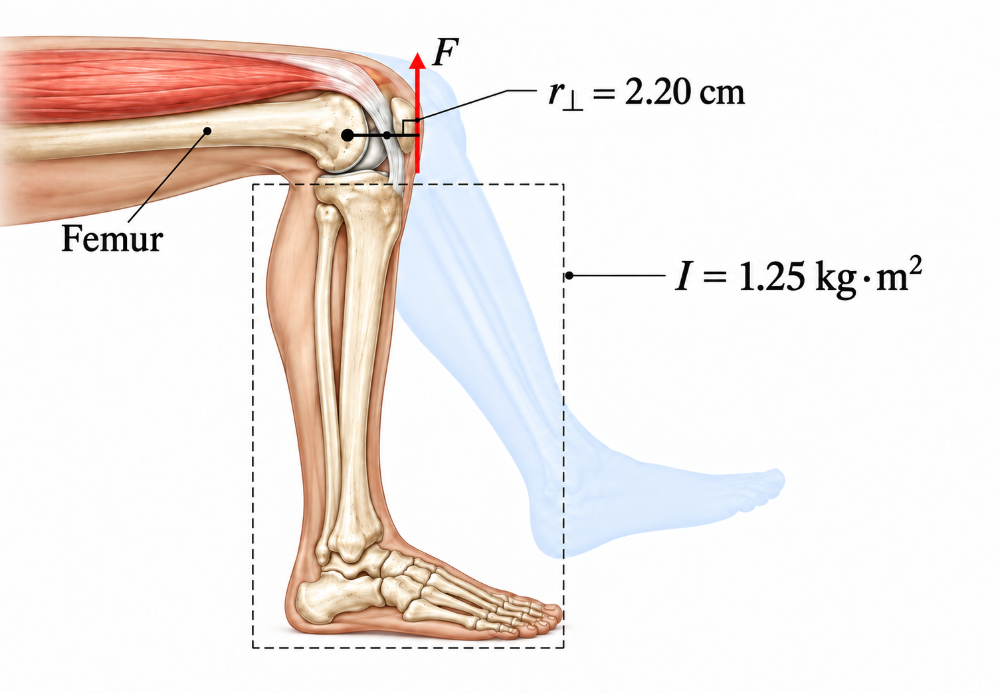
Fig. 9.11 Muscle torque during a kick. The thigh muscle pulls through the tendon, exerting a force \(F\) that produces counterclockwise torque about the knee. The effective lever arm \(r_\perp=2.20\ {\rm cm}\) is the perpendicular distance from the knee pivot to the force’s line of action, giving a torque magnitude \(\tau=r_\perp F\). The lower leg and foot have a moment of inertia \(I=1.25\ {\rm kg}\cdot{\rm m}^2\) about the knee; the pale silhouette indicates their forward rotation during extension. Adapted from: OpenStax, College Physics 2e, Figure 10.20.#
Show worked solution
The Model
Treat the lower leg as a rigid body rotating about the knee, with positive rotation in the direction of the kick. The given perpendicular lever arm converts muscle force into torque. Initially the lower leg is vertical, so gravity produces no torque about the knee; neglect gravity during the subsequent rotation as specified. Assume the muscle force and effective lever arm remain constant.
The Math
(a) The effective lever arm is \(0.022\ {\rm m}\). Because it is already the perpendicular distance to the force’s line of action, no additional angle factor is needed in the torque.
The angular acceleration follows from the net torque and the lower leg’s moment of inertia about the knee.
(b) The leg starts from rest, and the muscle supplies the net work in this model. The work–energy theorem therefore equates its final rotational kinetic energy to the torque acting through the given angle.
The Conclusion
The leg’s angular acceleration is \(34\ {\rm rad/s^2}\), and its rotational kinetic energy becomes \(44\ {\rm J}\). The substantial muscle force produces only \(44\ {\rm N\cdot m}\) of torque because its lever arm is short. The energy result matches the positive work done through one radian, as expected when gravity and losses are neglected.
Adapted from OpenStax, College Physics 2e, Example 10.13.
9.5.4. Conservation of Angular Momentum#
To change angular momentum, a torque must act over some period of time. Earth has a large angular momentum, which means that a large torque acting over a long time is needed to change its rate of spin. What external torques are there?
Tidal friction exerts torque that is slowing Earth’s rotation, but 10s of millions of years must pass before the change is significant. The length of the day was not always \(24\ {\rm h}\), but 900 million years ago, it was \(18\ {\rm h}\).
If the net torque is zero, then angular momentum is constant (or conserved). We can see this by considering the situation where the net torque is zero, which implies that
If the change in angular momentum \(\Delta L = 0\), then the total angular momentum is constant. Consider a system with an angular momentum \(L\) at a time \(t\), then after some time the angular momentum is measured again as \(L^\prime\). Then we have
These expressions are the law of conservation of angular momentum.
An example of the conservation of angular momentum considers an ice skater spinning. The net torque on her is very close to zero because there is relatively little friction between her skates and the ice. Also the friction exerted is very close to the pivot point, so \(\tau\) is negligibly small.
The skater can spin for a long time or increase her rate of spin by pulling her arms and legs in. Why does pulling her arms and legs in increase her spin rate?
Her angular momentum is constant so that \(L = L^\prime\), which we can express in terms of the moment of inertia to get
where the primed quantities refer to the time after she has pulled in her arms and reduced her moment of inertia. Because \(I^\prime\) is smaller, the angular velocity \(\omega^\prime\) must increase to keep the angular momentum constant.
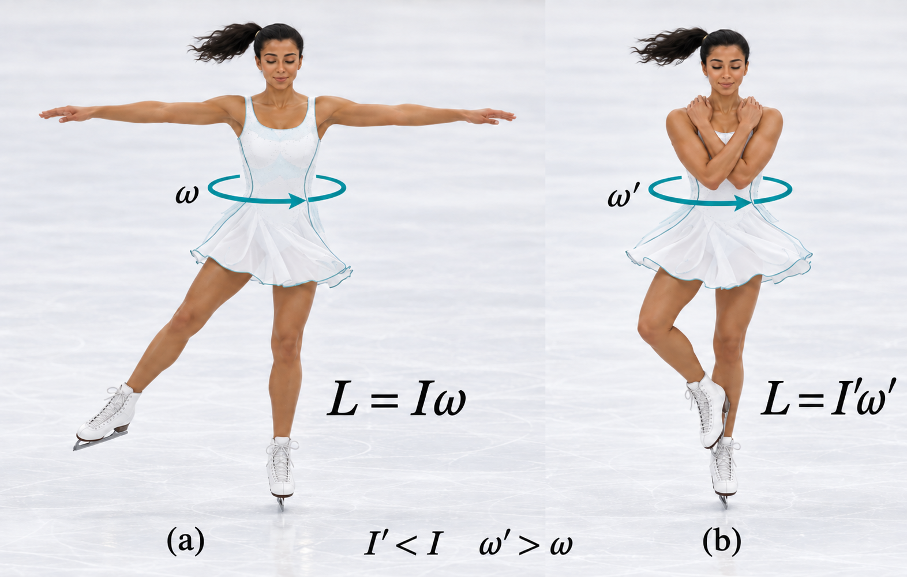
Fig. 9.12 Conservation of angular momentum in a spinning skater. (a) With her arms and free leg extended, the skater has a relatively large moment of inertia \(I\). (b) Pulling them inward reduces her moment of inertia to \(I'\) and increases her angular speed to \(\omega'\). Because the net external torque about her spin axis is negligible, her angular momentum remains constant: \(L=I\omega=I'\omega'\). Her rotational kinetic energy increases because her muscles do work as she pulls inward. Adapted from: OpenStax, College Physics 2e, Figure 10.21.#
9.5.5. Example Problem: Spinning Ice Skater#
Example Problem: Angular Momentum of a Spinning Ice Skater
The Problem
An ice skater spins at \(0.80\ {\rm rev/s}\) with her arms extended. Her moment of inertia changes from \(2.3\ {\rm kg\cdot m^2}\) to \(0.36\ {\rm kg\cdot m^2}\) when she pulls in her arms. (a) Find her final angular velocity. (b) Find her rotational kinetic energy before and after the change.
Fig. 9.13 Pulling the arms and leg inward decreases the skater’s moment of inertia and increases her angular velocity. Source: OpenStax, College Physics 2e, Figure 10.21.#
Show worked solution
The Model
Take the skater’s initial spin direction as positive and assume negligible external torque about her vertical rotation axis. Her changing body configuration changes the moment of inertia, but angular momentum remains constant. Use that conservation law to find the new angular velocity, then calculate each kinetic energy separately; internal muscular work means rotational kinetic energy need not be conserved.
The Math
(a) Conservation of angular momentum requires \(I_i\omega_i=I_f\omega_f\). Solving for the final angular velocity shows that it increases in inverse proportion to the moment of inertia. The inertia ratio is dimensionless, so revolutions per second can be retained in this step.
(b) Kinetic energy requires angular velocity in radians per second. Converting the initial rate within the substitution gives the initial rotational energy.
The final energy uses the smaller final moment of inertia and the larger final angular velocity. The displayed angular velocity retains one guard digit for this calculation.
The Conclusion
The skater speeds up to \(5.1\ {\rm rev/s}\), and her rotational kinetic energy increases from \(29\ {\rm J}\) to \(1.9\times10^2\ {\rm J}\). Faster rotation is expected when the same angular momentum is concentrated into a smaller moment of inertia. The energy increase comes from muscular work while pulling inward, so it does not contradict conservation of angular momentum or total energy.
Adapted from OpenStax, College Physics 2e, Example 10.14.
Check Your Understanding
The Problem
Is angular momentum completely analogous to linear momentum? What differences remain?
Show worked solution
The Conclusion
Angular and linear momentum play analogous roles: each changes in response to an external influence and is conserved when the corresponding net external influence is zero. They nevertheless describe different motion, have different units, and cannot be directly converted into one another. Angular momentum also depends on the chosen origin or rotation axis.
Adapted from OpenStax, College Physics 2e, Check Your Understanding.
9.6. Collisions of Extended Bodies in 2D#
Some objects rotate and collide, which makes the scenario a little more complicated to analyze. For example, bowling pins are sent flying and spinning when hit by a bowling ball, where angular momentum, linear momentum, and energy was imparted to the pins.
Consider the collision, in which a disk strikes and sticks (adheres) to a stick (initially at rest) nailed at one end to a frictionless surface.
After the collision, the two (stick and disk) rotate about the nail. There is an unbalanced external force on the system at the nail. This force exerts no torque because its lever arm \(r\) is zero. Angular momentum is conserved in the collision, but kinetic energy is not conserved because the collision is inelastic.
9.6.1. Using Angular Momentum in a Collision#
A collision that produces rotation can look different from the collisions we studied earlier, but the same conservation idea still applies. The important question is which quantity is conserved for the system during the collision.
For the disk and stick, the nail exerts an external force, so the linear momentum of the disk-stick system does not have to be conserved. However, if we calculate angular momentum about the nail, that force has no lever arm and therefore produces no torque about that point. The angular momentum about the nail is conserved during the collision.
Before the collision, the disk is moving in a straight line rather than rotating about the nail. A moving object can still have angular momentum about a chosen point. Its angular momentum is
where \(r_\perp\) is the perpendicular distance from the rotation axis to the disk’s direction of motion. After the collision, the disk sticks to the rod and they rotate together about the nail. Their final angular momentum is
where \(I_{\rm total}\) is the combined moment of inertia of the stick and disk about the nail. Because the external torque about the nail is zero during the collision,
so a collision like this can be analyzed using
The important strategy is to choose the rotation axis first. Then determine the angular momentum of each object about that axis before the collision, determine the total moment of inertia after the collision, and apply conservation of angular momentum.
Because the disk sticks to the rod, this is an inelastic collision. Angular momentum is conserved about the nail, but kinetic energy is not.
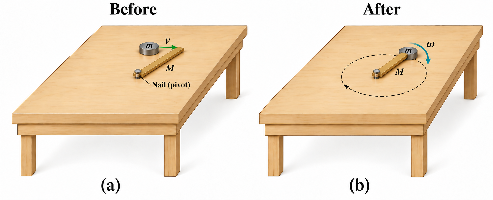
Fig. 9.14 Angular momentum in an inelastic rotational collision. Before impact, a puck of mass \(m\) moves toward a stationary rod of mass \(M\) on a frictionless table. The puck strikes near the rod’s free end and becomes attached, causing both objects to rotate about the fixed pivot with angular velocity \(\omega\). Angular momentum about the pivot is conserved during the collision because the pivot force produces no torque about that point and other external torques are negligible. Kinetic energy is not conserved because the collision is inelastic. Adapted from: OpenStax, College Physics 2e.#
9.6.2. Example Problem: Rotation in a Collision#
Example Problem: Rotation in a Collision
The Problem
A \(5.0\times10^1\ {\rm g}\) disk moving at \(30\ {\rm m/s}\) (measured to the nearest \(1\ {\rm m/s}\)) strikes and sticks to the end of a stationary \(1.2\ {\rm m}\), \(2.0\ {\rm kg}\) uniform stick pivoted at its other end on a frictionless surface. Find (a) the final angular velocity, (b) the kinetic energy before and after the collision, and (c) the total linear momentum before and after the collision.
Fig. 9.15 The pivot force has zero lever arm about the nail, so angular momentum about that point is conserved during the inelastic collision. Source: OpenStax, College Physics 2e, Figure 10.24.#
Show worked solution
The Model
Take moments about the nail and use the rotation caused by the impact as positive. As shown in the diagram, the disk strikes perpendicular to the stick; treat the disk as a point mass and the stick as a uniform rod. The nail exerts an impulse but no torque about itself, so angular momentum about the nail is conserved during the brief collision. Sticking makes the collision inelastic, and the external pivot impulse means linear momentum need not be conserved.
The Math
(a) After impact, the disk and stick rotate together. Their moments of inertia about the nail add, with the disk at radius \(r\) and the rod pivoted at one end.
Before impact, only the disk moves. Its velocity is perpendicular to the radius from the nail, so its angular momentum is \(mvr\). Conservation equates this initial value to the final rotational angular momentum.
(b) Initially the system’s kinetic energy is entirely the disk’s translational energy.
Immediately afterward, both objects rotate about the fixed nail. Their combined moment of inertia includes the motion of both objects, so the rotational expression gives the entire final kinetic energy.
(c) Choose the positive linear direction along the disk’s incoming velocity. The stationary stick contributes no initial momentum.
Immediately after impact, the disk and the stick’s center-of-mass move in that same direction. Their speeds differ: the disk moves at \(r\omega_f\), while the rod’s center-of-mass, halfway from the pivot, moves at \((r/2)\omega_f\). Adding their linear momenta gives the total.
The Conclusion
The joined objects rotate at \(1.7\ {\rm rad/s}\). Kinetic energy decreases from \(23\ {\rm J}\) to \(1.6\ {\rm J}\) as energy is transferred into deformation, heating, and sound during sticking. Linear momentum increases from \(1.5\) to \(2.2\ {\rm kg\cdot m/s}\) because the nail supplies an external impulse. These results are consistent: the fixed nail can change linear momentum without doing work or exerting torque about itself.
Adapted from OpenStax, College Physics 2e, Example 10.15.
9.6.3. The Percussion Point#
What would happen if the disk hit very close to the nail? A force would be exerted on the nail in the forward direction. Consider these two scenarios:
The stick is struck at the end farthest from the nail, where a backward force is exerted on the nail.
The stick is struck at the end nearest the nail, and a forward force is exerted on the nail.
Striking the stick at a certain point between these points produces no force on the nail. This intermediate point is known as the percussion point.
An analogous situation occurs in tennis.
If you hit a ball with the end of your racquet, the handle is pulled away from your hand.
If you hit a ball much farther down on the shaft of the racquet, the handle is pushed into your palm.
If you hit the ball at the racquet’s percussion point (aka the “sweet spot”), then little or no force is exerted on your hand and there is less vibration.
This reduces the chances of getting a tennis elbow, where the same effect occurs for a baseball bat.
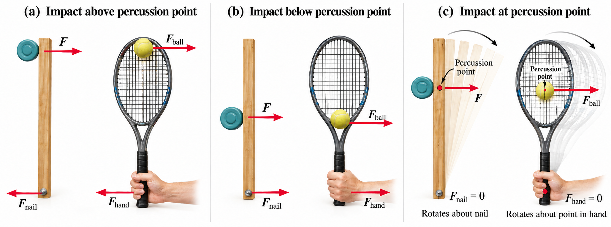
Fig. 9.16 The percussion point of an extended object. A disk striking a pivoted stick is analogous to a tennis ball striking a racquet. (a) An impact near the far end produces a backward force at the pivot or hand. (b) An impact closer to the pivot produces a forward force. (c) At the percussion point, the impact produces essentially no force at the pivot or hand. Adapted from: OpenStax, College Physics 2e, Figure 10.25.#
Check Your Understanding
The Problem
Is rotational kinetic energy a vector? Justify your answer.
Show worked solution
The Conclusion
No. Rotational kinetic energy is a scalar. Reversing the direction of rotation changes the sign or direction of angular velocity, but \({\rm KE}_{\rm rot}=\frac12I\omega^2\) is unchanged because angular speed is squared. Like every form of energy, rotational kinetic energy has no direction in space.
Adapted from OpenStax, College Physics 2e, Check Your Understanding.
9.7. Gyroscopic Effects#
Angular momentum is a vector, which has magnitude and direction. Torque affects both the direction and magnitude of angular momentum. What is the direction of the angular momentum of a rotating disk?
The direction of both the angular momentum and angular velocity can be found using the right-hand rule. The right-hand rule defines both \(\vec{L}\) and \(\vec{\omega}\) to be perpendicular to the plane of rotation. Because angular momentum is related to angular velocity (\(\vec{L}=I\vec{\omega}\)), the direction of \(\vec{L}\) is the same as the direction of \(\vec{\omega}\).
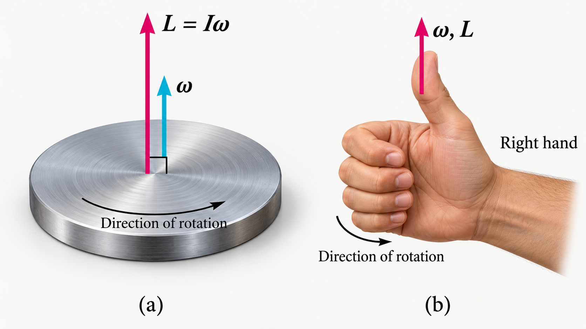
Fig. 9.17 Angular momentum and the right-hand rule. (a) For a rigid object rotating about a fixed axis, the angular momentum \(\vec{L}\) points along the rotation axis and has magnitude \(L=I\omega\). (b) The direction follows the right-hand rule: curl the fingers of your right hand in the direction of rotation, and your thumb points in the direction of both \(\vec{\omega}\) and \(\vec{L}\). Adapted from OpenStax, College Physics 2e.#
Recall that torque changes the angular momentum, which can be expressed by
This equation means that the direction of \(\Delta \vec{L}\) is the same as the direction of the torque \(\vec{\tau}\) that creates it.
Consider a bicycle wheel held by a woman with a couple of handles attached to it. With the wheel rotating, its angular momentum is to her left. Suppose she tries to rotate it, where her natural expectation is that the wheel will rotate in the direction she pushes it. But, the forces exerted create a torque that is horizontal toward the person.
Fig. 9.18 Gyroscopic precession of a spinning bicycle wheel. (a) A person lifts one end of the axle and pushes down on the other, creating a torque directed toward the person. The torque produces a change in angular momentum \(\Delta\vec{L}\) in the same direction. (b) Adding \(\Delta\vec{L}\) to the original angular momentum \(\vec{L}\) changes the direction of the wheel’s angular momentum, causing the wheel to move toward the person rather than in the direction of the applied forces. Adapted from OpenStax, College Physics 2e, Figure 10.28.#
This torque creates a change in angular momentum \(\Delta \vec{L}\) in the same direction (perpendicular to the original angular momentum), thus changing the direction of \(\vec{L}\) but not the magnitude of \(\vec{L}\). As a result, \(\Delta \vec{L}\) and \(\vec{L}\) add together and give a new angular momentum with direction that is inclined more toward the person than before. The axis of the wheel has moved perpendicular to the forces exerted on it instead of in the expected direction.
The same logic explains the behavior of gyroscopes. The torque produced is perpendicular to the angular momentum. Thus the direction of the angular momentum is changed but not its magnitude. The gyroscope precesses around a vertical axis since the torque is always horizontal and perpendicular to \(\vec{L}\). If the gyroscope is not spinning, it acquires angular momentum in the direction of the torque (i.e., \(\vec{L} = \Delta\vec{L}\)) and falls over (rotates about a horizontal axis) just as we would expect.
Fig. 9.19 Precession of a gyroscope. (a) The weight of the gyroscope produces a torque \(\vec{\tau}\) that is perpendicular to the angular momentum \(\vec{L}\). Rather than tipping over directly, the gyroscope responds by changing the direction of \(\vec{L}\) and precessing about the vertical axis with angular speed \(\omega_p\). (b) The vector change \(\Delta\vec{L}\) adds to the original angular momentum \(\vec{L}\), giving a new angular momentum \(\vec{L}+\Delta\vec{L}\) with a slightly different direction. Source: OpenStax, College Physics 2e.#
Check Your Understanding
The Problem
Rotational kinetic energy is associated with angular momentum. Does that mean rotational kinetic energy is a vector?
Show worked solution
The Conclusion
No. Angular momentum is a vector, but rotational kinetic energy is a scalar. The association between two quantities does not require them to have the same mathematical type; \(L=I\omega\) retains the direction of angular velocity, while \({\rm KE}_{\rm rot}=\frac12I\omega^2\) depends only on its magnitude.
Adapted from OpenStax, College Physics 2e, Check Your Understanding.
9.8. In-Class Exercises#
9.8.1. Instructions#
You will use the final 20 minutes of class to begin the problems assigned for that class day. First, you must make a serious attempt on each assigned problem independently. After developing your own approach, you may compare ideas and discuss the problems with other students.
Each student must prepare and submit an individual solution. Organize each quantitative solution using the Problem–Model–Math–Conclusion format. Show your reasoning, equations, substitutions with units, and interpretation of the result. A numerical answer without supporting work is not a complete solution.
Open this page in Google Colab so you can easily copy the problems to the template without retyping them.
Export your completed Jupyter notebook as a PDF and submit the PDF to D2L by 11:59 p.m. CT on the day of class. The PDF filename must follow the format LastName_ChXX_SetY.pdf, where XX is the two-digit chapter number and Y is the problem-set number.
Make your own copy before beginning
A read-only Jupyter notebook template is available on D2L. Before entering any work, you must make your own editable copy of the notebook by selecting Save a copy in Drive.
Changes made directly to the read-only template cannot be saved. It does not matter how much work you enter: if you have not made your own copy, your changes will be lost. Confirm that you can rename and save your copy before beginning the problems.
9.8.2. Problems#
Problem 1
You have a grindstone (a disk) that is \(9.0\times10^1\ {\rm kg}\), has a \(0.34\ {\rm m}\) radius, and is turning at \(9.0\times10^1\ {\rm rpm}\), and you press a steel axe against it with a radial force of \(2.0\times10^1\ {\rm N}\).
(a) Assuming the kinetic coefficient of friction between steel and stone is \(0.20\), calculate the angular acceleration of the grindstone.
(b) How many turns will the stone make before coming to rest?
Problem 2
Calculate the moment of inertia of a skater given the following information.
(a) The \(6.0\times10^1\ {\rm kg}\) skater is approximated as a cylinder that has a \(0.11\ {\rm m}\) radius.
(b) The skater with arms extended is approximately a cylinder that is \(52.5\ {\rm kg}\), has a \(0.11\ {\rm m}\) radius, and has two \(0.90\ {\rm m}\)-long arms which are \(3.75\ {\rm kg}\) each and extend straight out from the cylinder like rods rotated about their ends.
Problem 3
While punting a football, a kicker rotates her leg about the hip joint. The moment of inertia of the leg is \(3.8\ {\rm kg\cdot m^2}\) and its rotational kinetic energy is \(1.8\times10^2\ {\rm J}\).
(a) What is the angular velocity of the leg?
(b) What is the velocity of the tip of the punter’s shoe if it is \(1.05\ {\rm m}\) from the hip joint?
(c) Explain how the football can be given a velocity greater than the tip of the shoe, which is necessary for a decent kick distance.
Problem 4
Three children are riding on the edge of a merry-go-round that is \(1.0\times10^2\ {\rm kg}\), has a \(1.6\ {\rm m}\) radius, and is spinning at \(2.0\times10^1\ {\rm rpm}\). The children have masses of \(22\ {\rm kg}\), \(28\ {\rm kg}\), and \(33\ {\rm kg}\). If the child who has a mass of \(28\ {\rm kg}\) moves to the center of the merry-go-round, what is the new angular velocity in \({\rm rpm}\)?
9.9. Homework#
9.9.1. Instructions#
Homework assignment
The homework is designed to give you regular practice applying the ideas developed in this chapter. A read-only Jupyter notebook template for the assignment is available on D2L. Before entering any work, you must make your own editable copy of the notebook. Changes made directly to the read-only template cannot be saved, so confirm that you can rename and save your copy before beginning.
There are two types of homework questions:
Conceptual questions: Copy the question into your notebook and answer it under a heading titled The Conclusion. Your response should be a paragraph that directly answers the question and explains the physical reasoning behind your answer. A Model or Math section is not required unless the question genuinely requires a calculation.
Quantitative questions: Copy the problem into your notebook and organize your solution using the Problem–Model–Math–Conclusion format. Identify the physical situation, assumptions, knowns, unknowns, and sign convention in the Model; develop and apply the necessary equations in the Math; and state, interpret, and check your result in the Conclusion. Include units in numerical substitutions.
The worked examples on the course webpage model the reasoning and solution style expected in your homework.
Don’t wait until the night it is due
Homework is much easier to manage when you complete a couple of problems at a time as you work through the chapter. This gives you time to identify concepts that you do not understand and ask questions before the due date. Trying to complete the entire assignment the night it is due usually leaves little time to diagnose mistakes or revisit the course material.
Submission
When your assignment is complete, export the Jupyter notebook as a PDF and submit the PDF to D2L by 11:59 p.m. CT on the due date.
Name your submitted file using the format LastName_ChXX_HW.pdf. Replace LastName with your last name and XX with the two-digit chapter number. For example, homework for Chapter 2 submitted by Jane Smith would be Smith_Ch02_HW.pdf.
Before submitting, open the PDF and make sure that all questions, equations, figures, and solutions are visible and readable.
9.9.2. Conceptual Questions#
Problem 1
A ball slides up a frictionless ramp. It is then rolled without slipping and with the same initial velocity up another frictionless ramp (with the same slope angle). In which case does it reach a greater height, and why?
Problem 2
Suppose a child walks from the outer edge of a rotating merry-go-round to the inside. Does the angular velocity of the merry-go-round increase, decrease, or remain the same? Explain your answer.
9.9.3. Quantitative Questions#
Problem 3
An ultracentrifuge accelerates from rest to \(1.0\times10^5\ {\rm rpm}\) in \(2.0\ {\rm min}\).
(a) What is its angular acceleration in \({\rm rad/s^2}\)?
(b) What is the tangential acceleration of a point \(9.5\ {\rm cm}\) from the axis of rotation?
(c) What is the radial acceleration in \({\rm m/s^2}\) and multiples of \(g\) of this point at full rpm?
Problem 4
A gyroscope slows from an initial rate of \(32\ {\rm rad/s}\) at a rate of \(0.70\ {\rm rad/s^2}\).
(a) How long does it take to come to rest?
(b) How many revolutions does it make before stopping?
Problem 5
The triceps muscle in the back of the upper arm extends the forearm. This muscle in a professional boxer exerts a force of \(2.0\times10^3\ {\rm N}\) with an effective perpendicular lever arm of \(3.0\ {\rm cm}\), producing an angular acceleration of the forearm of \(1.2\times10^2\ {\rm rad/s^2}\). What is the moment of inertia of the boxer’s forearm?
Problem 6
A playground merry-go-round has a mass of \(1.2\times10^2\ {\rm kg}\) and a radius of \(1.8\ {\rm m}\) and it is rotating with an angular velocity of \(0.50\ {\rm rev/s}\). What is its angular velocity after a \(22\ {\rm kg}\) child gets onto it by grabbing its outer edge? The child is initially at rest.